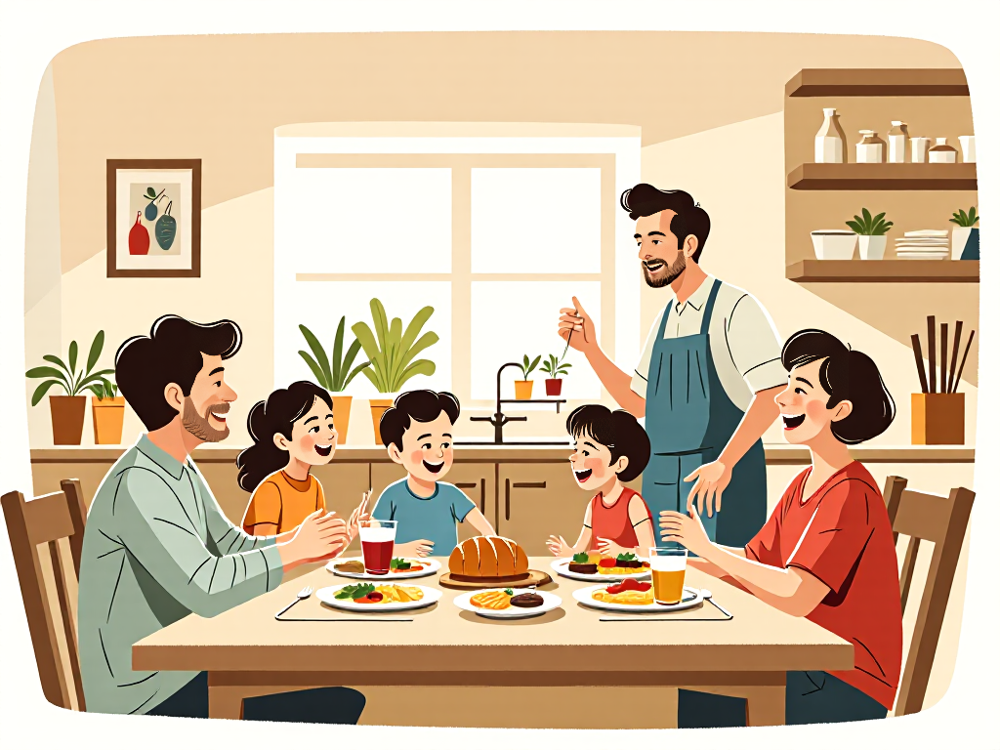
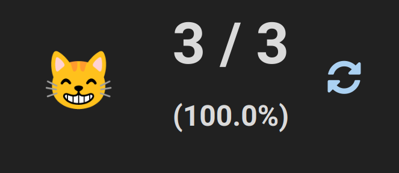
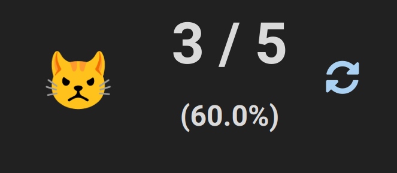
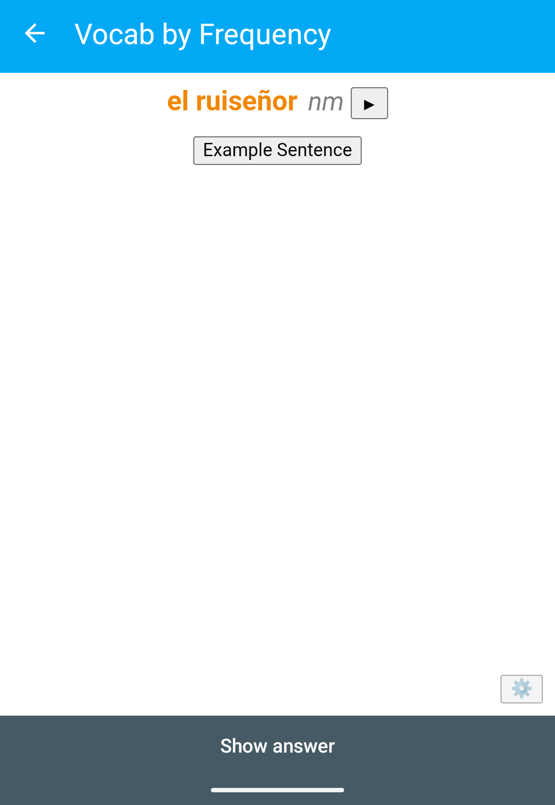

<div class="centered-container" style="height: 100dvh"> <p class="main-title">Programming For Yourself</p> <div class="main-title-info"> <div class="author"> Paul Ganssle </div> <div class="logo"> <img src="images/pganssle-logos.svg" height="40px" alt="@pganssle"> </div> <div class="link"> <span style="font-size: 1em;"><em>This talk on Github: <a href="https://github.com/pganssle-talks/2025-pycon-us-programming-for-yourself">pganssle-talks/2025-pycon-us-programming-for-yourself</a></em> </span> </div> <div class="license"> <a rel="license" href="https://creativecommons.org/publicdomain/zero/1.0/"> <img src="external-images/logos/cc-zero.svg" height="45px"> </a> </div> </div> </div> Notes: T: 30s Hi everyone, I'm Paul Ganssle and for my day job, I'm a software developer at Google, but as will soon become clear, it turns out that when my work day is over, I actually continue to be a software developer, believe it or not, and that's actually the subject of today's talk: the benefits of using your technical skills for your own pursuits! Because here's the thing: we live in a technologically advanced world, and as Arthur C. Clarke said, any sufficiently advanced technology is essentially indistinguishable from magic, which means...
<div class="centered-container"> <figure> <img src="images/generated/sorcerer_harvey_upscaled.png" alt="An crude drawing of a man with wild hair and a beard, set on a blurry background of a castle of some sort. The man sort of resembles Hagrid from Harry Potter, and there is text in Comic Sans that says, ¨You're a sorcerer, Harvey¨" class="splash" /> <figcaption class="smallcaption">From the IP-unencumbered film <i>Harvey Palmer and the Thinker's Rock</i></figcaption> </figure> </div> Notes: T: 1m:30s That you are a wizard. I mean, sorcerer. Think about it for a second, you invoke arcane commands, you summon daemons to do your bidding. You can perform unprecedented acts of divination. But the people in the world of Harry Potter, er.. I mean, Harvey Palmer... are not training the students at... uh.. Pigswart to be corporate drones, only using their magic to deliver shareholder value — magic suffuses their daily life. Similarly, I think it's a bit sad that more people build impressive skill portfolios at work, but don't see the dozens of opportunities around them to use their programming skills to make their day-to-day life a bit better or just a bit more magical. -- # Home-cooked meals <div class="centered-container">  <i><a href="https://www.robinsloan.com/notes/home-cooked-app/">Robin Sloan - An app can be a home-cooked meal</a></i> <i>https://www.robinsloan.com/notes/home-cooked-app/</i> </div> Notes: T: 2m30s Some time ago I came across an article that proposed a metaphor that really resonated with me, which is apps as home-cooked meals. In this article, Robin Sloan talks about a messaging app that he built and maintains just for his family's use. This metaphor draws attention to the fact that none of us thinks anything of going out and preparing a meal for your family, and in fact many of us get great joy from it, despite the fact that we could just go to a restaurant and have something prepared by a professional chef or a whole kitchen crew! Or we could buy pre-packaged food with economies of scale! Nor does anyone think anything of everyone having their own collection of homemade recipes. Why aren't these recipes being published? Why aren't you monetizing them? And still, building and maintaining a messaging app just for your family's use sounds a bit absurd to do, despite the fact that it probably takes less time than cooking your family a meal once a week, which sounds perfectly pleasant.
# Case Study: Chord Identification Trainer <div class="centered-container"> <img src="images/screenshots/study_abstract_00.png" alt="Abstract of a study called 'A longitudinal study of the process of acquiring absolute pitch: A practical report of training with the ´chord identification method´'. It is published in Psychology of Music 2014, Vol. 42(1) 86-111." class="screenshot splash"> </div> Notes: T: 4m One of my projects that I think really illustrates the home-cooked meal idea is the Chord Identification Method trainer that I built; a few years ago I came across this study from a Japanese music school, which claimed that they have a method for teaching children between the ages of 2 and 6 to have perfect pitch which works by having them identify a series of chords. The way it works is that the child does 5 sessions of 25 identifications every day. Each session is very short, true, but this requires that I am able to be near a piano with my son, 5 times a day. It also requires me to generate sequences of randomly-chosen chords by some unspecified method, and they also recommend that you keep records of how your child does. Obviously, none of this is going to happen, but you know what is basically always around, can make sounds, and is really good at generating pseudo-random sequences? Computers! And luckily, as we've already established, as a programmer I hold dominion over computers, and can bend them to my will. -- # Feedback from your loved ones is fun <img src="images/screenshots/chord-trainer-v00-red-yellow.png" class="screenshot splash fragment nospace-fragment disappearing-fragment fade-out" alt="A black screen with the words ´Chord Identification Method Trainer´ at the top, with a small circled info button. Under that is a play button and a greyed-out right arrow. Below that are two squares, one red and one yellow, and under that is a score (0/0) with a ´reset´' button next to it. The lowest element on the page is a pulldown that says ´Yellow (CFA)´. It looks fine but crude, elements aren't centered or anything of that nature." data-fragment-index="0"> <img src="images/screenshots/chord-trainer-v02-cat-faces.png" class="screenshot splash fragment disappearing-fragment nospace-fragment fade-in" data-fragment-index="0" alt="Screenshot of the application which now has a neutral cat emoji next to the progress numbers." /> Notes: T: 4m30s Now, normally, I don't build web applications, but a web application seemed likely to be the easiest thing to deploy to tablets and phones on different platforms, so to solve this problem, I found an online piano and whipped up a little web app using a static site generator and some Javascript, and we started using it with my son's tablet. Unfortunately, I had some trouble getting my son to feel motivated by making a number go up, and so obviously I needed to add... cats! Now there was a kitty whose emotions reflect how well you are doing. -- # Feedback from your loves ones is fun <div class="centered-container"> <div class="gallery two-high nospace-fragment disappearing-fragment fragment fade-out" data-fragment-index="0"> <div class="gallery-item"> <img src="images/screenshots/chord-trainer-v02-cat-hearts.png" alt="Cropped screenshot of the chord trainer application. Red has been selected and is correct. The cat emoji now has hearts in its eyes. 😻" class="screenshot"/> </div> <div class="gallery-item"> </div> </div> <div class="gallery two-wide two-high fragment fade-in" data-fragment-index="0"> <div class="gallery-item">  </div> <div class="gallery-item"> <img src="images/screenshots/chord-trainer-v02-cat-faces-1-neutral.png" alt="Slightly smiling cat emoji (🐱) next to a 3/4 (75%) score." class="screenshot" /> </div> <div class="gallery-item">  </div> <div class="gallery-item"> <img src="images/screenshots/chord-trainer-v02-cat-faces-3-sad.png" alt="Sad cat emoji (😿) next to a 3/5 (60%) score." class="screenshot" /> </div> <div> </div> Notes: T: 5m30s When you get one right, she's happy, when you get one wrong, she's spooked! And her emotion varies from happy to sad depending on how well you are doing overall. I think this is an example of something that was actually quite fun to build because my son and I were working together to build something that worked for both of us. He also had very strong opinions about how we should indicate when you have gotten a perfect score, and several other things. Sometimes he would chide me with stuff like, "How come you haven't added this feature yet?" -- # My son shows off his inner hacker <div class="centered-container"> <img src="images/generated/hacker_kid.png" alt="A generated image of a kid in a hoodie sitting in a dark room working on a computer with green screen on black text" class="splash fragment disappearing-fragment nospace-fragment fade-out" data-fragment-index="0"> <video controls autoplay muted class="fragment disappearing-fragment nospace-fragment fade-in-and-out" data-fragment-index="0" aria-label="Screen capture of the chord trainer application. A perfect score is achieved on the red/yellow label, showing 5/5 (100%), then the level is changed to red/yellow/blue and the perfect score remains." > <source src="videos/color_change_hack.webm" type="video/webm"> </video> </div> Notes: T: 6m30s This also provided some awesome moments of parental pride, when I got to see my son's inner hacker. You see, when I first threw together the app, it was pretty janky. It was really not designed for the kid to use it themselves, but eventually my son wanted to occasionally just do it himself like a game — sure! And wow, he was improving fast! He started getting perfect scores on the 3-chord level almost immediately! Of course, then I realized that he had found the bug where the score didn't change if you changed the level. He would go off into his room, turn it to the level he could do perfectly, and then change it back at the end and say, "Check it out, perfect score!" Brings a tear to your eye to see the next generation of hacker growing up before your very eyes, but of course I had to fix that to up the challenge. -- # You can use software to connect to those around you <div class="centered-container"> <img src="images/screenshots/chord-trainer-video-00.png" class="screenshot splash fragment nospace-fragment disappearing-fragment fade-out" alt="Paul and his son (a boy of around 5) at a table with a microphone and the chord trainer overlaid in the bottom left corner. THey are both wearing shirts with a space pattern and taco-cats (cats sticking out of tacos). The boy is also wearing headphones with cat ears. The application shows 12/12 (100%)" data-fragment-index="0"> <img src="images/pictures/conference-photo.jpg" alt="Paul (a man with brown hair and a beard in his late 30s) and his son. They are wearing conference lanyards and are standing in front of a projector that says ´Welcome Nerds! March 8-9, 2024, new england regional developers. UMass Amherst Campus Center" class="splash fragment nospace-fragment disappearing-fragment fade-in" data-fragment-index="0" style="border: 2px solid black;"> </div> Notes: T: 8m The other thing that's great about this project is that it's given me lots of opportunities to connect with my son. At some point I wanted to make a little video to put on YouTube explaining to people how to use the app, and my son was super excited to do it together, he was super excited to be on a Youtube channel and to show off that he knew all the rules and that he was mastering chord identification. And last March, I put together a presentation about this project that was given at the NERD Summit in western Massachusetts, and my son got to join me on stage as part of the talk, which was really fun— he got to feel the pride of his accomplishments with his first time presenting at a conference, plus it didn't hurt that we got to stay in a hotel. With this project in particular, I am often asked whether it's something I'd like to start selling or build a business around, and my answer is basically always no. I'm not saying it would be wrong or bad to make money from my work, but I don't want to worry about prioritizing user features, or features that drive engagement or retention. I am happy to make this available and use it to connect with my family. Though I have started to get a number of other parents contacting me saying that they've been using the app, and it is nice to know that other families are getting some joy out of it as well. -- # Progress <div class="centered-container"> <video controls aria-label="Video of a child using a tablet with an overlay of the application in the corner. He calls out chord names and presses the corresponding button, getting them all right. The chords are chosen randomly from 13 options, arranged in a grid. Each option has its own color and the chord components in western (A-G) notation." > <source src="videos/chord_identification.webm" type="video/webm"> </video> </div> Notes: T: 9m15s OK, so at this point, it would be unfair of me to tell you that I built this app 2 years ago and then not tell you how it's been going. I will not sugar-coat this, I would say it's going OK. He can consistently identify 13 chords, and he's /really/ good at it, as you'll see in the video. He doesn't seem to be identify individual notes, though according to the book that should just start happening naturally, so I don't know if he will actually acquire absolute pitch from this or not, but what he can do is already quite impressive, take a look: -- <style> div#logo-container { display: flex; flex-direction: row; justify-content: space-evenly; width: 95dvw; } div.logo-entry { display: flex; flex-direction: row; align-items: center; font-size: 1.5em; } div.logo-entry img.logo { height: 1.5em; max-height: 1.5em; margin-right: 0.2em; } </style> <div class="centered-container"> <div id="logo-container"> <div class="logo-entry"> <img src="external-images/logos/youtube.svg" class="logo"/> <a href="https://youtube.com/@TimePandaMax">TimePandaMax</a> </div> <div class="logo-entry"> <img src="external-images/logos/twitch.svg" class="logo"/> <a href="https://twitch.tv/timepanda920621">timepanda920621</a> </div> </div> </div> Notes: T: 9m45s And as compensation for helping me out with the video, I have agreed to use this time to tell you all about my son's Youtube Channel, which is TimePandaMax on Youtube, and so far consists of gaming live streams, so if you are interested in watching a 7-year-old play Portal 2 or Minecraft, uh... smash that... bell? And don't forget to like and subscribe! His goal is to get 1 million followers, so I'm sure he would appreciate it.
# Case Study: Audiofeeder <div class="centered-container"> <img src="images/screenshots/antennapod_queue_screenshot_base.png" class="splash mobile-screenshot screenshot nospace-fragment fragment disappearing-fragment fade-out" alt="The queue of an AntennaPod feed. It contains 5 elements" data-fragment-index="0" /> <img src="images/screenshots/antennapod_queue_screenshot_books_and_english.png" class="splash mobile-screenshot screenshot nospace-fragment fragment disappearing-fragment fade-in-and-out" alt="The same queue, but now 3 elements are highlighted. 'Charles Stross - Invisible Sun' is labeled 'Fiction Book', 'Core.py Episode 21: A Garbage Episode' is labeled 'Podcast Episode' and 'Cliff Kuang - User Friendly' is labeled 'Nonfiction Book'" data-fragment-index="0" /> <img src="images/screenshots/antennapod_queue_screenshot_spanish.png" class="splash mobile-screenshot screenshot nospace-fragment fragment fade-in" alt="The same queue, but now the other two elements are highlighted, both labeled 'Spanish Podcast'. The episodes are 'Pizzel Ep 37 - Un bofetazo de mono' and 'Esferas Invisibles - 23:59:60'" data-fragment-index="1" /> </div> Notes: T: 11m OK, so the next project I'd like to show you is something that I built primarily for myself, but understanding why I care about it takes a bit of explanation. You see, I listen to a lot of audio content, a mix of audiobooks and podcasts. Specifically, I usually try to listen to about an hour of one audiobook, then about an hour of a podcast, then about an hour of a different audiobook, then repeating. And about 18 months ago I started learning Spanish, so now I also like to alternate content between English and Spanish. I do it this way because I find that interleaving my content and stretching it out over many days helps me retain it better when compared to "binging" all in a row, and not getting a chance to sleep on the ideas presented before returning to them later. The problem, however, is that a lot of applications treat podcasts and audiobooks as fundamentally different things. They expect you to go to an audiobook application to listen to audiobooks and then switch to a podcast application to listen to podcasts, but about 10 years ago I realized that if I just have audio files on a computer, I can create an RSS feed for them and turn all my audiobooks into podcasts, so they would work with whatever podcast player I want! -- # First version: manually run generated HTML pages <img src="images/screenshots/audiobooks_v0.png" alt="A screenshot of a sparse webpage labeled 'Audiobook RSS Feeds'. It has 3 (public domain) books, each with a cover image and a QR code. The books are Edith Wharton - The Writing of Fiction, H. G. Wells - The Invisible Man and Bram Stoker - Dracula" class="splash screenshot" /> Notes: T: 11m15s The first version of this was janky as hell. I would from time to time run a script that generates an HTML page with QR codes for the RSS feeds on it. As you can see there was no CSS here. No pagination, it was just a bare list of stuff. -- <style> div.striped-border-blocks code { border: 3px black dashed; padding: 3px; } </style> <div class="side-by-side striped-border-blocks"> <div> ```python """ Serve Audiobooks as podcasts """ from datetime import datetime import time from email import utils import os import hashlib import qrcode import win32file ... server_name = "..." server_name="192.168.0.XXX" port_number = 6351 podcast_list = { "Writing of Fiction": { "author":"Edith Wharton", "title":"The Writing of Fiction", "cover":"WritingOfFiction-Cover.jpg", "location":"Nonfiction/Edith Wharton - The Writing of Fiction" }, "Dracula": { "author": "Bram Stoker", "title": "Dracula", "cover":"Cover.jpg", "location":"Fiction/Bram Stoker - Dracula" }, ... ``` <br/> ```python HTML_page = """ <html> <head> <title>Audiobook RSS Feeds</title> </head> <body> <center> <h2>Audiobook RSS Feeds</h2> <table> {audiobooks} </table> </center> </body> </html> """ ``` </div> <div style="display: flex"> ```python RSS_feed="""<?xml version="1.0" encoding="UTF-8"?> <rss xmlns:itunes="http://www.itunes.com/dtds/podcast-1.0.dtd" version="2.0"> <channel> <title>{channel_title}</title> <description>{channel_desc}</description> <link>{channel_link}</link> {cover_image_tag} <language>en-us</language> <lastBuildDate>{build_date}</lastBuildDate> <pubDate>{pub_date}</pubDate> <docs>http://blogs.law.harvard.edu/tech/rss</docs> <itunes:author>{author}</itunes:author> <itunes:summary>{channel_desc}</itunes:summary> <itunes:explicit>No</itunes:explicit> {itunes_cover_image_tag} {items} </channel> </rss> """ RSS_item = """ <item> <title>{item_title}</title> <link>{channel_link}</link> <description>{item_desc}</description> <pubDate>{item_pubdate}</pubDate> <guid>{item_guid}</guid> <enclosure url="{item_url}" length="{item_size}" type="audio/mpeg"/> </item> """ ``` </div> </div> Notes: T: 11m45s As you can see from the code, not only was I manually running it, I was also manually adding the book information, but it worked! It generated a page and a rudimentary RSS feed that I could use. -- # Still manually run, but with more features <div class="centered-container"> <img src="images/screenshots/audiobooks_v1.png" alt="An improved version of the webpage. It now has 22 pages and large, oversized arrows left and right for navigation to first, previous, next and last pages. The section with books still has a cover and a QR code, but now the rows alternate between a dark and light grey background. The cover and QR code have moved to the left, and there is now a description below each book. The books are all by Vernor Vinge: ´A Fire Upon the Deep´, ´The Children of the Sky´ and ´A Deepness in the Sky´. (They are in this order even though ´Children of the Sky´ is actually the third book in the series)" class="splash screenshot" /> </div> Notes: T: 12m15s I think pretty soon after that (I have no git history this early on in the project because it was all very yolo), I got tired of manually adding all the book information, and the number of books I had was getting unwieldy for a single page, so I added something that automatically parses the book names and authors from the folder names, retrieves descriptions from Google books, and breaks them up into multiple pages. This was still something I ran manually, and it was still generating a static page, but it was considerably more ergonomic. -- # Next version: Flask site <div class="centered-container fragment nospace-fragment disappearing-fragment fade-out" data-fragment-index="0" > <img src="images/screenshots/audio_feeder_00_list_entry.jpg" alt="A smaller more mobile-friendly version of the site. The arrows are now smaller, the rows are still striped between dark and light grey, but there is also a settings element in the top right. The QR codes are no longer visible, but there is an icon below each cover representing 4 squares, and each element has multiple links under the name, ´Single File´, ´Segmented´ and ´Chapters´ - some combination of these shows up on each book. It is the same 3 public domain books,b ut now Mary Shelley's Frankeinstein is also on the list." class="splash screenshot" /> </div> <div class="centered-container nospace-fragment fragment disappearing-fragment fade-in" data-fragment-index="0" alt="A similar screenshot as before, but with a QR code superposed on top of the site" > <div class="side-by-side"> <img src="images/screenshots/audio_feeder_02_settings_pulldown.jpg" class="splash screenshot" data-fragment-index="0" /> </div> </div> Notes: T: 12m45s A few years after that, I didn't want to keep having to manually run the updater, and I realized that I wanted some more dynamic features that wouldn't fit with a static site. Despite having worked as a developer professionally for several years at this point, I barely knew how to make any kind of dynamic web site and I didn't know how to use SQL, but I had an interesting problem to solve, so over Christmas break I looked up how to use Flask and created and deployed a version of the app with nice mobile support, with different options for sorting and pagination, and that automatically updated itself with some cadence. -- # Your applications can grow with you <div class="centered-container"> <img src="images/screenshots/audio-feeder-docker-gh.png" class="splash screenshot fragment fade-out nospace-fragment" alt="Screenshot of a Github repository called audio-feeder-docker. It has 1 star, 17 commits and no releases. The languages are visible, 78% Dockerfile and 21% Shell." data-fragment-index="0" /> <div class="caption"> <i>Available at <a href="https://github.com/pganssle/audio-feeder">https://github.com/pganssle/audio-feeder</a></i> </div> </div> Notes: T: 14:00 I've been maintaining some version of this app for a decade now, and I think it's a striking example of how your projects and your abilities can grow in a mutually-reinforcing way. When this project started causing problems with updates because of how I was deploying it, it encouraged me to learn to use docker so that I could isolate this from my system. Similarly, when I started doing a lot more work with SQL during my job, I finally felt confident migrating this system away from the previous system, which was using a giant YAML file as a "database" to something based on SQLlite -- # Adding features for yourself <style> img.segfig { height: 80dvh !important; } </style> <img src="images/screenshots/audio_feeder_03_feeds.jpg" class="splash screenshot fragment disappearing-fragment fade-out" alt="One of the earlier screenshots of the website, this time with the 3 alternate feeds (Single File, Chapters, Segmented) highlighted on Bram Stoker - Dracula" data-fragment-index="0" /> <img src="images/figures/chapter-segmentation-base.svg" class="splash figure fragment disappearing-fragment fade-in-and-out segfig" alt="A vector drawing with various rounded rectangles of various thicknesses stacked on one another, representing chapters in an audiobook file. They have numbers on them in white representing minutes. 45, 10, 25, 55, 18, 8, 50, 35, 93, 15, 20" data-fragment-index="0" /> <img src="images/figures/chapter-segmentation.svg" class="splash figure fragment disappearing-fragment fade-in-and-out segfig" alt="The same as the previous figure, but now there is an arrow pointing right to another figure which has all the same rectangles but spread out and with no numbers on them. The shorter ones are in red and the longer ones are in green." data-fragment-index="1" /> <img src="images/figures/chapter-segmentation-greedy.svg" class="splash figure fragment disappearing-fragment fade-in-and-out segfig" class="The figure representing chapters with an arrow that now splits into 5 right arrows, each pointing to smaller stacks of rounded rectangles. The chapters have been grouped together, and there are numbers representing each aggregate's size: 70, 73, 93, 93, 35" data-fragment-index="2" /> <img src="images/figures/chapter-segmentation-greedy-red.svg" class="splash figure fragment disappearing-fragment fade-in-and-out segfig" alt="The same as the previous figure, but now the last number (35) is bright red, and two of the other numbers (73 and 93) are a darker red)." data-fragment-index="3" /> <img src="images/figures/chapter-segmentation-optimal.svg" class="splash figure fragment disappearing-fragment fade-in-and-out segfig" alt="Another distribution of the chapters, this time into 4 files of length 70, 81, 85 and 128" data-fragment-index="4" /> Notes: T: 17m00s The other thing that I think this app demonstrates is how valuable it is to build something that you can tailor to your own needs. For example, eagle-eyed viewers may have noticed that in the latest version, there are actually 3 RSS feeds. The reason for this is that I get audiobooks from various sources, and they're not always in the exact same format. Sometimes they're one giant file, sometimes they are broken up into a million 5 minute-long files, neither of which really works for me. There is often chapter information available, so this would be an example of some book with chapter metadata, the units are all in minutes. Eventually I added what is probably my favorite feature of the whole application, which breaks up big files and merges small files until I get something that is made up of chunks of about an hour. The naïve way to do this would be to just greedily combine files until you get to an hour, but this leaves you with some sub-optimal splits, including some that are way too short. So the way I do it now, I can provide it an arbitrary cost function, and it will find the optimal way to split or merge the file that minimizes the total cost over the total audiobook. The default cost function is even an asymmetric cost function, that takes into account the fact that if I need something to be too short or too long, I'd prefer it to be too long. This is a ridiculous feature. It brings in an ffmpeg dependency, it uses dynamic programming — I've literally never needed to use dynamic programming before outside of an interview context, but apparently *this situation* is exactly what we've all been practicing for — and if this were a commercial product I'm sure I would have prioritized things like user accounts or filtering by tag way, way before this thing, but honestly, it's my favorite part of the application.
# Not every project is big! <div class="centered-container"> <figure> <img src="images/figures/gym-calibration.png" alt="4 matplotlib figures representing Cable 1, 2, 3 and 4 Resistance. They all show a dashed straight line through a number of points, and each has a legend showing R² of between 0.9975 and 0.9997. The Y axis is ¨Actual Resistance (lbs)¨ and the X axis is ¨Nominal Weight (lbs)¨. The y values vary from 10 to 70 and the x values vary from 20 to 160." class="figure splash"/> <figcaption>The cable machines in the Google Cambridge gym have ~2.2x leverage over the nominal weights</figure> </figure> </div> Notes: T: 18m30s OK, so I've told you about a few of my big projects, but I don't want to leave you with the impression that every project you do has to be some big thing. Some of my most satisfying uses of programming for myself are times when I had a question that I wanted to answer, and I could use a computer to do it. For example, a few years ago I noticed that when I was at the gym at Google, I could lift like a ton of weight on the cable machines. 180 pound tricep pushdowns, no problem. For some reason, when I am travelling, I have to set the rack like less than half of that. There are two obvious conclusions here: either Google offices make you extremely strong or traveling makes you extremely weak. But then I hit upon a third, clearly less likely option, which is that the pulleys on cable machines might be providing leverage. I wanted to quantify this, so I got a luggage scale and hooked it up to the cable machine, then figured out how much weight it was experiencing with each plate. I plugged this into a colab, which is like a jupyter notebook, but easier for me to share with other people at Google, and found that at the Cambridge gym the cable machine has a 2.2x leverage! -- # Not every project is big! ## Example: Podcast normalization <div class="centered-container"> <div class="gallery two-wide"> <div class="gallery-item"> <img src="images/figures/seattle-library-podcast-2014-10-28.png" alt="A matplotlib figure with 5 lines representing the average loudness of a Seattle Public Library podcast from 2014. The true dbFS is a black dashed line at around -35, a red line labeled ¨random¨ wobbles around this a bit, but is basically tracking it perfectly for the whole graph, a line labeled start starts out very low and then shoots up after ~10,000 samples, then slowly start converging towards the true value, never reaching it. A line representing the end starts low and follows a gentle curve towards the true line, but never gets higher than -50 after ~80000 samples. A line labeled ¨middle¨ starts close to the true value, shoots up, then converges to the true value after ~30,000 samples." class="figure" /> </div> <div class="gallery-item"> <img src="images/figures/triunvirato-podcast-2015-03-31.png" alt="A similar matplotlib figure, this time representing an episode of Triunvirato from 2015. The black dbFS is near -26. The red line again tracks it basically perfectly from the start. All the other lines miss the mark by a lot; middle starts out closest but ends up at around -38 after ~90,000 samples. ´Start´ starts out very low, then has a major leap at around 15000 samples, then almost converges to the true value, then diverges a bit, ending up at ~35. End starts out at -95 and doesn't start inching up until ~70,000 samples and even then only makes it to ~-88dB" class="figure" /> </div> </div> <div class="gallery"> <div class="gallery-item"> <pre> | dBFS | | Name | True | Start | Middle | End | Random | |=====================================|==========|==========|==========|==========|==========| |10-percent-of-brain |<b> -33.65 </b>| -36.78 | -39.18 | -36.78 |<font color="#10BA13"> -33.43 </font>| |triunviratopodcast6-3-31-2015 |<b> -26.63 </b>| -31.13 | -33.73 | -31.13 |<font color="#10BA13"> -26.64 </font>| |ancient-greek-music |<b> -20.45 </b>|<font color="#F61010"> -82.81 </font>| -16.94 |<font color="#F61010"> -82.81 </font>|<font color="#10BA13"> -20.44 </font>| |serial-episode-07 |<b> -19.04 </b>|<font color="#10BA13"> -19.13 </font>| -20.78 |<font color="#10BA13"> -19.13 </font>|<font color="#10BA13"> -18.99 </font>| |seattle-library-podcast-2014-10-28 |<b> -34.13 </b>| -28.08 |<font color="#10BA13"> -33.97 </font>| -28.08 |<font color="#10BA13"> -34.06 </font>| |spy-museum-podcast-2014-11-07 |<b> -21.97 </b>|<font color="#F61010"> -42.74 </font>| -17.81 |<font color="#F61010"> -42.74 </font>|<font color="#10BA13"> -22.00 </font>| </pre> </div> </div> </div> Notes: T: 20m Another example like this is a little project I did about 14 years ago. Back then, podcasts weren't nearly as professionally produced as they are today, and I found that there was an incredible amount of inconsistency between how they were mastered. Some of them were really loud and some of them were really quiet. But the thing is, they are pretty consistent throughout, and they're also very long files, so I was wondering how well you could estimate the amount of correction to the levels you would need to apply to normalize the audio *without* reading the whole file. I found that as you might expect, reading from the beginning or end of the file was not that consistent, because they usually have intro or outro music or something that is different from the bulk of the file. The middle was a lot better, but not consistently getting to the "true value", even for the relatively small sample I tested. However, I found that if you just took samples from the file randomly, you would converge on the true value remarkably quickly, using something like 2 seconds of audio from an hour+ long file. Very interesting result, and something that I'd love to see implemented in a podcast player (specifically AntennaPod, which is open source, hint hint all you developers looking for projects). -- # Not every project is big! <div class="centered-container">  <img src="images/screenshots/anki-nightingale-01-sentence.png" alt="The same screenshot as before, but with a Spanish sentence revealed, ´Los poetas románticos a menudo escribÃan sobre el melodioso canto del ruiseñor', followed by a play button" class="fragment mobile-screenshot screenshot disappearing-fragment nospace-fragment fade-in-and-out" data-fragment-index="0"/> <img src="images/screenshots/anki-nightingale-02-sentence-english.png" alt="Same as before, but now there is an English translation: nightingale; Romantic poets often wrote about the melodious song of the nightingale. There is also a citation below showing that this was generated by claude-3-5-sonnett-20241022 on 2025-02-16." class="fragment mobile-screenshot disappearing-fragment nospace-fragment screenshot fade-in-and-out" data-fragment-index="1"/> </div> Notes: T: 21m15s Another little project I have is that I use Anki all the time, which is a spaced repetition flash card system. When I learned that you could put Javascript in the cards, it was somewhat dangerous knowledge for me, since it let me start expanding what I could do with cards. The method I'm using to learn spanish initially recommends that you don't do too much reading in favor of listening in context, but I still wanted flash cards, so I added some javascript that would automatically read words to me, first by themselves, and then in context. Then if you notice I added this little settings button, which when you expand it, it lets you use this janky little interface to decide what gets read and when. The thing is, now that I was using Javascript already, I realized that it might be nice to hear words in a lot of different contexts, so I added something that randomly chooses a sentence from a pre-set list of sentences, encoded in JSON in a field on the card. But then I needed a source of natural, native-sounding sentences. -- # Not every project is big! <div> <pre class="code-wrapper"> <code data-trim data-noescape class="language-python"> <span class="fragment semi-fade-out" data-fragment-index="0"> SENTENCE_PROMPT: Final[str] = """\ You are an expert Spanish teacher and lexicographer, whose specialty is designing excellent example sentences that show off the range of uses of a given word. I am going to give you valid JSON representing a term ("term") in Spanish and its meaning in English ("meaning"). I would like you to generate valid JSON containing 4 example sentences in idiomatic Spanish that use the term accompanied by a translation from the original Spanish into English; the example sentences should use the sense of the term that has the meaning specified by the English meaning. When the word is a verb, select different moods and tenses in the different sentences. The translations do not need to be word-for-word translations, it is more important that they capture the general spirit of the original Spanish. </span><span class="fragment custom bolds" data-fragment-index="0">In some of your example sentences, it would be a bonus if they contain useful or interesting facts.</span> <span class="fragment semi-fade-out" data-fragment-index="0"> Example: ======== INPUT: ---------- { "term": "casa", "part_of_speech": "nf", "meaning": "house" } OUTPUT: -------------- { "term": "casa", "meaning": "house", "examples": [ { "spanish": "La casa de mi abuela está en el campo.", "english": "My grandmother's house is in the country." }, { ... """ </span> </code> </pre> <div><em>You know what's really good at languages? A Large Language Model</em></div> </div> Notes: T: 21m30s And it turns out that that's something LLMs are *really* good at, so I created this prompt to take words and their meanings and generate sentences. And the part of this I'm most proud of is this line, which tells the LLM that if the sentence can double as an interesting fact, go for it. -- <!-- .slide: data-transition="none" --> # Not every project is big! <div class="gallery three-wide"> <div class="gallery-item"> <img src="images/screenshots/anki-nightingale-04-distinct-sounds.png" alt="Screenshot of an Anki card for ´el ruiseñor´ with the sentence ´El ruiseñor común puede producir más de 1000 diferentes sonidos distintos´ / ´The common nightingale can produce more than 1000 different sounds.´" class="screenshot mobile-screenshot" > </div> <div class="gallery-item"> <img src="images/screenshots/anki-nightingale-05-full-moon.png" alt="Screenshot of an Anki card for ´el ruiseñor´ with the sentence ´El canto del ruiseñor es más potente durante las noches de la luna llena´ / ´The nightingale's song is strongest during full moon nights.´" class="screenshot mobile-screenshot" > </div> <div class="gallery-item"> <img src="images/screenshots/anki-nightingale-06-borges.png" alt="Screenshot of an Anki card for ´el ruiseñor´ with the sentence ´Hay un ruiseñor y una noche.´ / ´There is a nightingale and a night.´ The citation says that this comes from Jorge Luis Borges's Ficciones, ¨Examen de la obra de Herbert Quain¨ p114-115" class="fragment mobile-screenshot screenshot fade-in" data-fragment-index="2" > </div> </div> Note: T: 23m And you can see it works really well! It tends to give me a lot of interesting animal facts. Mostly they seem real, too, some of them are made up. I could have sworn that this full moon one was going to be made up, but actually that one appears to be real. But now I'm far enough along in learning Spanish that I've started doing a lot of reading, and reading is a big source of new vocabulary, and I wanted an easy way to turn those into flash cards, so I wrote a script that extracts annotations from my e-reader, and then takes the sentences that the word appeared in and turns that into an example sentence. And as you can see, I also have it generating a little bit of source information. This is important because I know that when something came from a Jorge Luis Borges book, it is probably some extremely obscure thing and if I use that word Spanish speakers will look at me funny. Half the time I looked up a word in his books I didn't know the word for the concept in /english/. -- <h1> <span class="fragment nospace-fragment disappearing-fragment fade-out" data-fragment-index="1">Not every project is big!</span> <span class="fragment nospace-fragment fade-in" data-fragment-index="1">Sometimes your small projects <b>become<b> big</span></h1> <div> <img src="images/screenshots/anki-textual-lite-word-merger.svg" alt="Screenshot of a Textual UI merging 3 versions of ´sacar de quicio´, which means ¨to drive someone crazy, make them lose their cool¨. The UI shows more information about the part of speech, Article and number of examples (total = 8). There are 6 options for what to do: Back, Accept Merge, Edit Merge, Choose Word, Refresh and Quit. In the title bar you can see that this is word 16 of 158." class="screenshot splash"> <div class="caption">Using Textual to create a proper UI to resolve word conflicts</div> </div> Notes: T: 23m30s This was all well and good, but then I found that with all these new words coming in, I was seeing a lot of conflicts with words already in the deck, and I was spending a lot of time resolving these conflicts, so I whipped up this little user interface with Textual to make it easier to resolve the conflicts. And you know what I'm realizing now? This slide was supposed to be all about little projects, but uh.. that title isn't exactly appropriate at this point is it? Because actually what I'm demonstrating here is the way that small projects have a way of turning into big projects when you are really using the things you're working on.
# LLMs are changing the bespoke application landscape <img src="images/screenshots/claude-textual-ui-00.png" class="screenshot splash fragment disappearing-fragment nospace-fragment fade-out" alt="A conversation with Claude 3.7 Sonnet labeled 'Textual TUI App for Merging Word Definitions'. Claude says that they will help create the app, and in the panel to the right it shows the full prompt, which explains what the application does (deduplicate Spanish words) and gives some different `attrs` definitions of dataclasses." data-fragment-index="0"/> <div class="gallery two-high"> <div class="gallery-item"> </div> <div class="gallery-item"> <img src="images/screenshots/claude-textual-ui-02.png" alt="Another conversation that just says Error: and has an error pasted in. In the side panel Claude is generating more code." class="screenshot fragment nospace-fragment fade-in" data-fragment-index="0"/> </div> </div> <div class="caption">LLMs let you be more ambitious</div> Notes: T: 24m45s So this brings me to another point, which is the role of LLMs in bespoke applications. When I first conceived of this talk, I did not propose to discuss LLMs at all, because they were not that useful, but I'm finding that the LLMs we have right now are /really/ good for this kind of thing. For one thing, they let you take on more ambitious projects than you thought otherwise might be able to because they help with a lot of the boilerplate and I find that they tend to be highest leverage at getting me up to speed with a new technology, because they will generate some code that more or less works, and then I can ask follow-up questions about how it's supposed to work and what it's supposed to be doing. When I was building the Textual UI, I had never used Textual before, so I asked an LLM for what I wanted, and it didn't work at first, but after a bit of back and forth I had something I could reasonably debug, and I'm confident that that I was only able to fit that project in the amount of time I had available to do it because of the leverage the LLM provided. -- # LLMs make the easy stuff basically free <div class="centered-container"> <div class="side-by-side"> <div class="left-container left"> <b>Prompt</b> <blockquote> Please write me an imagemagick or other command line command that takes a number of images and removes a section from the middle of it (along the y axis). So if I have an image that is 500 pixels tall, and I specify `FROM=200` and `TO=250`, I want the result to be an image that is 450 pixels tall (because 50 rows of pixels have been removed), and the missing section should start 200 pixels from the top and go until 250 pixels from the top. </blockquote> </div> <div class="right left-container"> <b>Result</b> ```bash #!/bin/bash FROM=200 TO=250 for img in "$@"; do filename=$(basename -- "$img") extension="${filename##*.}" filename="${filename%.*}" # Calculate bottom section height (total height minus TO) height=$(identify -format "%h" "$img") bottom_height=$((height - TO)) # Extract top and bottom sections and combine convert "$img" \ -gravity North -crop x${FROM}+0+0 \ \( "$img" -gravity South -crop x${bottom_height}+0+0 \) \ -append "${filename}_trimmed.${extension}" echo "Processed $img -> ${filename}_trimmed.${extension}" done ``` </div> </div> Notes: T: 25m30s Similarly, on the extreme low end, LLMs can make some of the easy stuff basically free. When I was putting together this talk, I needed a way to cut a chunk out of the middle of a bunch of screenshots, so I wrote up a quick prompt describing what I wanted, got a result and it worked the first time. The whole interaction took about a minute and I didn't have to try to remember how to do anything in bash or read any man pages. -- # ML Models can be new components in your programs <div class="centered-container fragment disappearing-fragment nospace-fragment fade-out" data-fragment-index="0"> <div> <br/> `getclip | python -m anki_lang_cards.org_to_csv` <br/> <div class="gallery two-wide"> <div class="gallery-item medium-code left-container"> <h3>Input</h3> ``` - [ ] tienes más cara que espalda = ? - [ ] tiquismiquis = ? - [ ] chute = shot, goal - [ ] un hueso duro de roer = a tough nut to crack - [ ] fiaca = lazy (Argentina) - [ ] quintal = a lot? ``` </div> <div class="gallery-item medium-code left-container"> <h3>Output</h3> ``` ,tienes más cara que espalda,you have a lot of nerve,v phr,,,,, ,tiquismiquis,"fussiness, nitpicking",nm,el,,,, ,chute,"shot, goal",nm,el,,,, ,un hueso duro de roer,a tough nut to crack,v phr,,,,, ,fiaca,laziness (Argentina),nf,la,,,, ,quintal,"hundredweight, a large amount",nm,el,,,, ``` </div> </div> </div> </div> <div class="centered-container fragment nospace-fragment fade-in" data-fragment-index="0"> <img src="images/screenshots/sumana-blog-whisper.png" alt="A screenshot of a blog post from a blog titled is ¨Speech-to-text with Whisper: How I use it & Why¨. The blog is by Sumana Harihareswara and is called Cogito, Ergo Sumana." class="splash screenshot"/> https://www.harihareswara.net/posts/2022/speech-to-text-with-whisper-how-i-use-it-why/ </div> Notes: T: 27m The other thing that ML models can do is act as components in your programs, doing things that were previously difficult or maybe even impossible to do. Long ago I tried doing other flash card generating things and I often was stmied by the complexity of NLP applications, headword stemming, that sort of thing. Now, I can do things like this where I can just take notes on new Spanish words I encounter, sometimes with definitions and sometimes not, and I just pipe them into something that cleans them up and gets them ready to go into the flash card generator. There are also non-LLM ML models getting better all the time. A few years ago I read a blog post by my friend, open source and Python legend Sumana, where she talks about using self-hosted instances of Whisper for speech recognition. This inspired me to set up a pipeline where my personal voice memos that I take about my children's lives and growth milestones can be automatically transcribed, so I can easily search through them.
# Building for yourself goes beyond software <div class="gallery three-wide" data-fragment-index="0"> <div class="gallery-item"> </div> <div class="gallery-item"> <img src="images/pictures/hapticap-01-inside.png" alt="The interior of a baseball cap that has many wires sewn into it. There is a sensor sewn onto the brim, a circuit board on one side and a battery receptacle on the right side. Wires run from those components to the brim and to the back of the hat, which has a small black pouch sewn into it." /> </div> <div class="gallery-item"> <img src="images/pictures/hapticap-02-back.png" alt="The back of the hat, which has a pouch covering the hole in the back of the hat the wires that normally go into the pouch are exposed and you can see that they are connected to a small Arduino with a mini-USB port on it." /> </div> </div> https://pganssle.github.io/HaptiCap/ Notes: T: 27m40s
# Lessons learned <style> ul.wrap-up li { margin-top: 0.75em; margin-bottom: 0.75em; font-size: 1.5em; } div.wrap-up { font-size: 1.5em; } </style> <div class="side-by-side"> <div class="left-container left"> <ul class="wrap-up"> <li>You can use whatever tech stack you want</li> <li class="fragment fae-in" data-fragment-index="0">Projects are a great way to learn</li> <li class="fragment fade-in" data-fragment-index="1">You can use programming to answer questions for yourself</li> <li class="fragment fade-in" data-fragment-index="2">Your projects don't have to pay</li> <li class="fragment fade-in" data-fragment-index="3">It's OK to make something just for you</li> <li class="fragment fade-in" data-fragment-index="4">It's also great to tell other people about your work</li> </ul> </div> <div class="right"> <!-- Tech stack --> <div class="fragment fade-out nospace-fragment disappearing-fragment" style="display: grid; grid-template-columns: 1fr 1fr; gap: 0.5em;" data-fragment-index="0"> <img src="external-images/logos/Python.svg" alt="The Python logo" style="width: 100%; height: auto;"> <img src="external-images/logos/rust.svg" alt="The Rust logo" style="width: 100%; height: auto;"> <img src="external-images/logos/excel.svg" alt="The Excel logo" style="width: 100%; height: auto;"> </div> <!-- Learning opportunity --> <div class="fragment fade-in-and-out nospace-fragment disappearing-fragment" data-fragment-index="0"> <img src="external-images/fair-use/automate-the-boring-stuff.jpg" alt="The cover of Automate the Boring Stuff by Al Sweigart" style="max-height: 80dvh"> </div> <!-- Answering questions --> <div class="fragment fade-in-and-out nospace-fragment disappearing-fragment" data-fragment-index="1"> </div> <!-- Don't have to pay --> <div class="fragment fade-in-and-out nospace-fragment disappearing-fragment" style="display:grid; grid-template-columns: 1fr; gap: 0.5em;" data-fragment-index="2"> <img src="images/screenshots/chord-trainer-pwa-install-dialog.png" style="max-width: 100%; height: auto; margin: auto" alt="A modal dialogue labeled ´Install app´ installing the app ´Chord Identification Method Trainer´, and the logo for the application" /> </div> <!-- Make something for you --> <div class="fragment fade-in-and-out nospace-fragment disappearing-fragment centered-container" data-fragment-index="3"> <div class="caption" style="font-style: italic; font-size: 0.6em">Traffic and all traffic cameras between my work and home in Houston, circa 2015</div> </div> <!-- Tell people about it --> <div class="centered-container fragment fade-in-and-out nospace-fragment disappearing-fragment" data-fragment-index="4"> <img src="images/screenshots/pycon-lightning-talks.png" alt="Screenshot with information about the PyCon US 2025 Lightning Talks" style="max-width: 100%; height: auto; max-height: 80dvh; margin: auto" /> </div> </div> </div> Notes: T: 29m30s -- # More info <div class="centered-container"> <div class="left-container" style="font-size: 1.5em"> <p><b>Website:</b> <a href="https://ganssle.io">https://ganssle.io</a></p> <p><b>Blog:</b> <a href="https://blog.ganssle.io">https://blog.ganssle.io</a></p> <p><b>Mastodon:</b> <a href="https://qoto.org/@pganssle">@pganssle@qoto.org</a></p> <p><b>Github:</b> <a href="https://github.com/pganssle">@pganssle</a></p> <p><b>Gitlab:</b> <a href="https://gitlab.com/pganssle">@pganssle</a></p> </div> <div class="side-by-side"> <div class="left"> - [Chord Identification Method Trainer](https://pganssle.github.io/cim/) - [audio-feeder](https://github.com/pganssle/audio-feeder) - Anki card generator (Link to come) </div> <div class="right"> - [Python norm estimate](https://github.com/pganssle/python-norm-estimate) - [My dotfiles](https://github.com/pganssle/dotfiles) - [TimePandaMax](https://youtube.com/@TimePandaMax) </div> </div> Notes: T: 30m